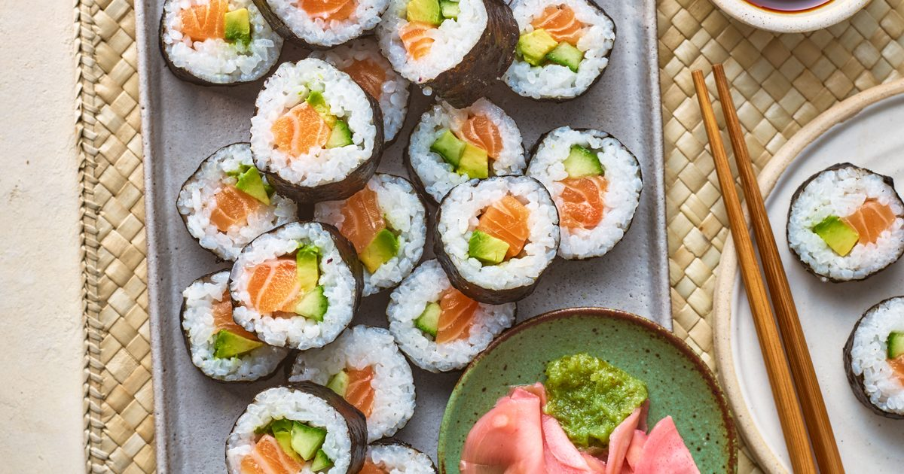

Utensils and Mannerisms
Utensils/Manners:
- Contrary to what one would assume, in Japan, it's actually good manners and a sign of enjoyment to slurp your
noodles.
- do: rest chopsticks on plate/bowl rim, aka the side of your dish.
do NOT: stick chopsticks into the bowl, or your food (seen as bad luck, rude, death omen due to resemblance to
shrine incense, etc)
(pro tip: this manner tends to bleed into other cuisines, so to be safe, don't leave your chopsticks in your food!)
- Do not: Give tip in Japan, as it's considered unnecessary and possibly rude.
- Some polite phrases: "Itadakimasu (いただきます)" which is said as a thank you before a meal, similar to saying
grace--and "gochisousamadeshita (ごちそうさまでした)" which is said as a thank you after a meal.
Allergens and Dietary Restrictions
Shellfish allergy: Shellfish and seafood are big parts of Japanese culture.
